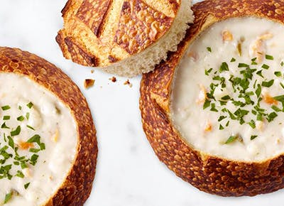

MY Favorite Eats in San Francisco
Here are some restaurant recommendations that I would make if you were to visit San Francisco.
I am excited to list out some of the best restaurants in SF.
San Francisco is bay area, it should not be a surprise that San Francisco has some of the best clam chowder in the world.
In San Francisco, there is one of the biggest Chinatown across the states, you can try real Chinesefood like Dimsum!
Thrid one is Mama's on Washington Square - this is a must place to enjoy a delicious breakfast. Be prepared for a long line up.
I would not forget to mention my favorite burger which is In-N-Out Burger. The meat, lettuce, tomatoes, and cheese are all so fresh!
You can order "Animal Style" fries from their not-so secret menu,which is worth trying.
After a big meal, Are you ready with some dessert? This is Salt&Straw's ice creams. They have every classic flavor of ice cream which is handmade from locally sourced ingredients.
Are you ready for a dinner? I would recommend Foreign Cinema that is a one-of-a-kind, nationally recognized restaurant that combines independent cinema with California-Mediterranean cuisine.
Also, don't forget to try their seafood. San Francisco is bay area, so you can enjoy fresh seafood. Seafood fiends can start with fresh East or West Coast oysters, including Miyagi.
Second restaurant that can be considered for dinner is Sotto Mare which is San Franciscos' Best Italian Seafood Restaurant. Highly recommend to try Crab Cioppino.